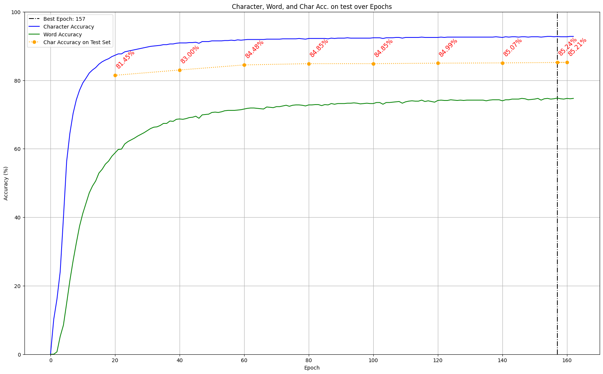

McCATMuS
Retours sur la production d’un meta-dataset multilingue et multiséculaire
ALMAnACH Inria / Université de Montréal / Ecole Pratique des Hautes Etudes
2024-09-20
The Menu
- publication de la vérité de terrain comme livrable valorisable
- importance des règles de transcription pour l’agrégation de données
- présentation de McCATMuS, un meta-dataset multilingue et multiséculaire
HTR-United
- catalogue de données d’entraînement pour la reconnaissance de l’écriture manuscrite
- des métadonnées structurées pour chaque dataset
- pas de modèle, seulement des datasets
- créé en 2020
- édité et maintenu par Alix Chagué et Thibault Clérice
Organisation d’HTR-United
- site internet :
- htr-united.github.io/
- interface de consultation du catalogue, avec des filtres
- formulaire de description de dataset avec structuration automatique
- documentation pour l’utilisation d’outils de contrôle continu
- organisation GitHub entièrement publique :
- github.com/HTR-United
- répertoire dédié au catalogue
- proposition de datasets via issues ou pull requests
- catalogue structuré en YAML et disponible en JSON
- répertoire dédié au schema de description
- espace de discussion pour l’évolution du schéma
Aperçu du catalogue HTR-United
Pourquoi HTR-United ?
- encourager le partage de données et la réutilisation, quel que soit le logiciel utilisé
- améliorer la visibilité des datasets (trouvabilité, citation)
- faciliter l’accès aux datasets (lien, licence, condition d’accès)
- sensibiliser à l’importance des métadonnées et de la description des datasets
Contenu du catalogue HTR-United
(v. 0.1.151)
102 datasets
26 langues, pour 8 systèmes d’écriture
période discontinue de -250 à 2023
~25K pages, ~1.7M lignes, ~65M caractères
Répartition des logiciels utilisés pour les datasets référencés dans HTR-United
Un dataset bon élève
Du point de vue de la structure, pas de la vérité de terrain elle-même:
- conditions de réutilisation claires (idéalement CC-BY)
- format standard (XML ALTO, XML PAGE)
- images dans les datasets ou informations claires sur comment les obtenir
- règles de transcription explicites et détaillées
- données de bonne qualité
- transcription homogène
- pas de mélange entre données manuelles et automatiques
- structuration du répertoire
data/(par langues, siècles et/ou documents)
Un catalogue comme HTR-United permet aussi d’aggréger des données pour des méta-datasets et des modèles génériques, capables de couvrir un large spectre de mains, de périodes, de types d’écriture, voire de langues.
CATMuS
principale difficulté pour aggréger des données : l’interopérabilité des règles de transcription
CATMuS : Consistent Approaches to Transcribing ManuScripts
un ensemble de recommandations pour la transcription
spécifiques aux langues latines
variations entre documents médiévaux et modernes/contemporains
17 collaborateur-rices (Europe et Amérique du Nord)
Quelques exemples de recommandations (1)
Recommandatins générales:
Numbers MUST be transcribed as they appear in the document, whether as Roman or Arabic numerals.Lowercase letters MUST NOT be normalized into capital letters.Abbreviations MUST NOT be developped.
Quelques exemples de recommandations (2)
Recommandations de transcription:
In medieval documents, ramist letters are a distinction of form, and MUST be normalized and transcribed as "i" and "u".1In modern and contemporary documents, reference marks, such as "*" [U+002A] or "※" [U+203B] MUST be transcribed as "*" [U+002A].For in-line corrections, the combination of "" [U+27E6] and "" [U+27E7] MUST be used
Quelques exemples de recommandations (3)
Recommandations liées à la mise en page:
Interlinear corrections MUST NOT be confused with superscript sequential additions.Text decoration like underline MUST NOT be transcribed, even using any form of pseudo-markup.
(D’avantage de détails sur le site)
D’où viennent ces règles ?
Établies sur le base de CREMMALab
- Ariane Pinche. Guide de transcription pour les manuscrits du Xe au XVe siècle. 2022. ⟨hal-03697382⟩
- alimenté et étendu par des projets de production de données
- CREMMA
- Gallic(orpor)a
- FoNDUE
- HTRomance & HTRogène
- DEEDS
Application de CATMuS aux spécifications des projets
- CATMuS est un ensemble de recommandations, pas un standard
- les projets peuvent s’en inspirer, les adapter, les étendre
- et proposer un scénario de conversion vers une version compatible avec CATMuS
- par exemple:
fichier_1.xml(spécifique au projet) ⇒fichier_1.catmus.xml(compatible avec CATMuS)
Modèles et datasets CATMuS
- 3 datasets d’entraînement publics diffusés sur HuggingFace
- catmus-medieval
- catmus-modern ou McCATMuS (moderne & contemporain)
- catmus-medieval-segmentation
- 6 modèles de transcription
- CATMuS Medieval
- McCATMuS
- CATMuS Print (Large), (Small) et (Tiny)
- CATMuS Gothic Print
CATMuS fournit un cadre pour la définition de bonnes pratiques et l’harmonisation des règles de transcription.
McCATMuS
- un meta-dataset : résultat de l’agrégation et de la conversion de 22 datasets référencés dans HTR-United et compatibles avec CATMuS
- multilingue : français, français moderne, espagnol, latin, italien, anglais, allemand et occitan
- multiséculaire : du XVIe siècle au XXIe siècle
plus d’informations sur la production du dataset McCATMuS : alix-tz.github.io/phd/categories/catmus/
Volumétrie de McCATMuS V1
- 118K lignes de vérité de terrain
- 3,8M caractères
- mélange manuscrits, imprimés et tapuscrits
- principalement
- des documents de la pratique,
- des documents épistolaires
- des documents littéraires
Distribution du dataset McCATMuS par langue et par siècle
Vérité de terrain pour l’HTR mais aussi des métadonnées
consultable ici: https://huggingface.co/datasets/CATMuS/modern
Modèle McCATMuS V1
- entraîné avec Kraken v4.3.13 en août 2024
- 90|10 split aléatoire entre train et dev
- normalisation NFD ; augmentation des données ; batch size de 32 ; learning rate de 0.0001
- early stopping après 10 époques sans amélioration
- total époques : 157
- Character Accuracy : 92.8%
- Word Accuracy : 74.8%
- Character Accuracy sur test : 85.24%
Courbe d’apprentissage de McCATMuS V1
Courbe d’apprentissage du modèle McCATMus (montrant character accuracy & word accuracy)
Scores sur test de McCATMuS V1

Scores d’accuracy de McCATMuS, Manu McFrench et McFONDuE sur différentes configuration du test set CATMuS
Futur de McCATMuS
- ajout de nouveaux datasets pour rééquilibrer les langues et les siècles
- résoudre quelques problèmes sur la V1 du dataset
- poursuivre tests de McCATMus, par exemple en situation de finetuning
Conclusion
En quoi tout ceci est utile aux discussions d’aujourd’hui ?
- HTR-United:
- vérité de terrain = livrable valorisable
- qualité et documentation des données
- CATMuS:
- épineuse question des règles de transcription
- cadre(s) pour l’aggrégation et la réutilisation
- McCATMuS:
- un modèle et un dataset auxquels NFN pourrait contribuer!
Merci!
20 sept. 2024 - UQAR - Le patrimoine archivistique face au virage numérique